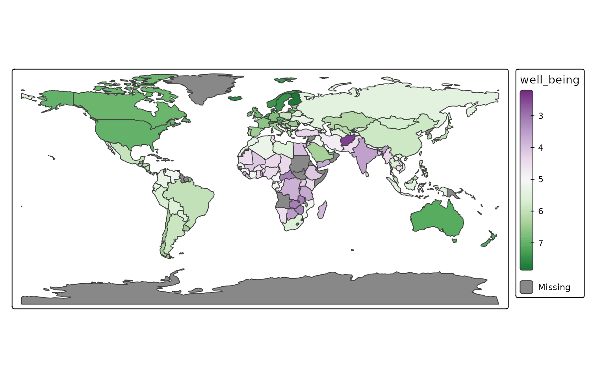

Recall that tmap offers two modes: "plot" for
static mapping and "view" for interactive mapping. See introduction.
The "view" mode uses the JavaScript library Leaflet as
backend.
The extension package tmap.mapgl offers two new modes which
are also interactive: "mapbox" and "maplibre"
which use the JavaScript libraries Mapbox GL and Maplibre GL
respectively. An API key is required to use "mapbox" (free
for personal use), but "maplibre" is (as the name suggests)
free for any use.
Note that tmap.mapgl is a bridge between the R packages mapgl and tmap. It makes the functionality of mapgl (making the JavaScript libraries available to R) also available via the tmap user interface.
Switching modes
Get the current mode
tmap_mode()
#> ℹ tmap modes "plot" -> "view" -> "mapbox" -> "maplibre"
#> ℹ rotate with `tmap::rtm()`switch to "plot" with `tmap::ttm()`Switch to mapbox
tmap_mode("mapbox")Alternatively, rtm() can be used to rotate between
modes:
rtm()Now we are in maplibre mode:
Making the map
The syntax to create the map is exactly the same as for the other tmap modes:
tm_shape(World) +
tm_polygons("well_being",
fill.scale = tm_scale_continuous(values = "pu_gn"))
#> [tip] Consider a suitable map projection, e.g. by adding `+ tm_crs("auto")`.
#> This message is displayed once per session.